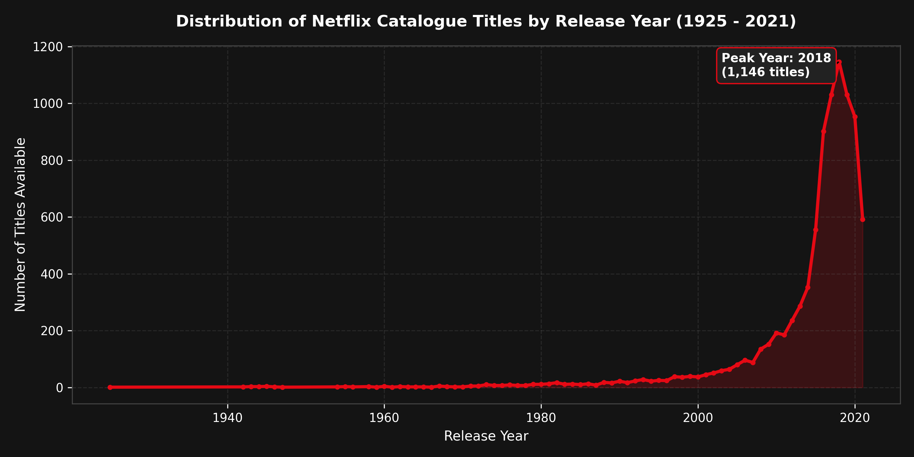
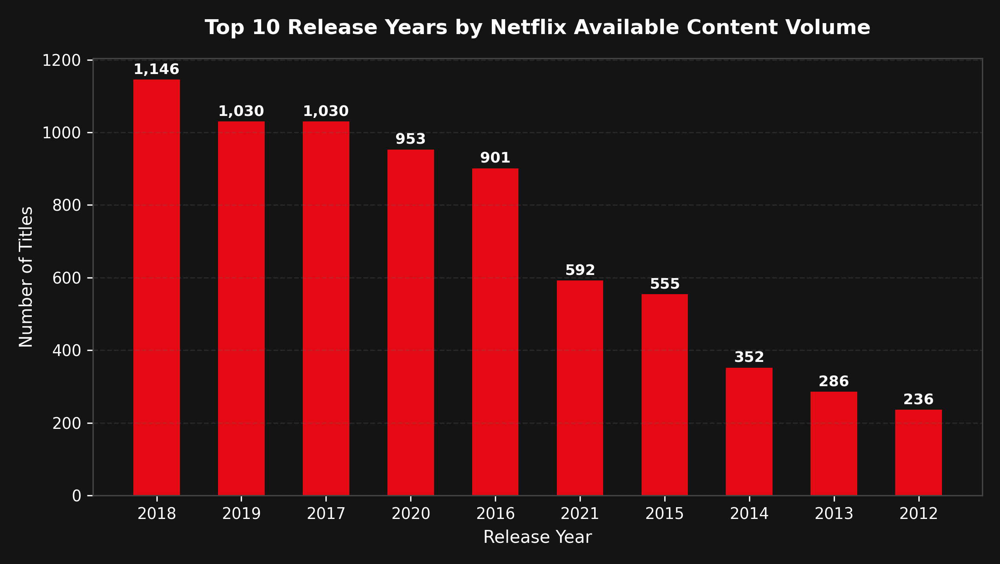
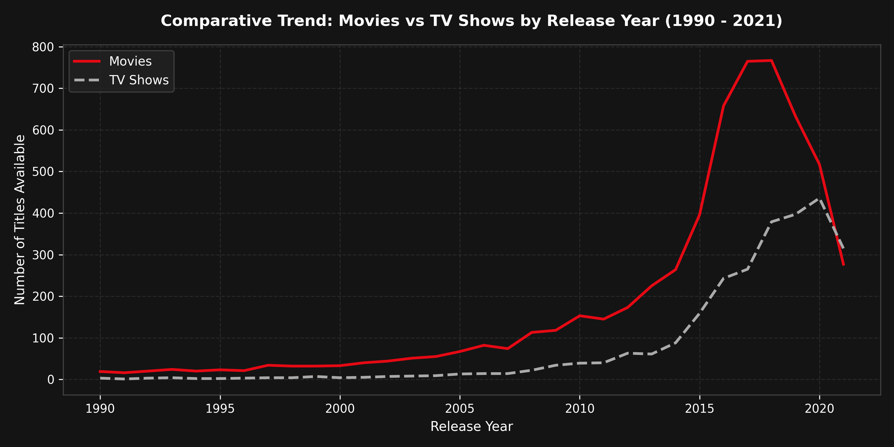

Project Overview
Chronological parameters, definitions, and data methodology.
🎯 Core Objective
Understand how Netflix catalogue titles are distributed chronologically across release years. Identify growth, peak acquisition periods, and shifts between movies and series.
🛡️ Accurate Wording
The release_year column represents the year a title was originally produced or premiered, not necessarily the year it was added to Netflix streaming servers.
⚙️ Tech Stack
Implemented using simple Pandas functions: groupby(), size(), sort_values(), and visualised with Matplotlib and Chart.js.
Key Statistics
Chronological span, milestone years, and all-time records.
Yearly Content Distribution Trend
Interactive trajectory of titles by release year (1925 to 2021).
Distribution of Netflix Titles by Release Year (Line Chart)
Python Matplotlib Export: output/yearly_content_trend.png

Top 10 Release Years
Ranking table and volume comparison for the top 10 years.
| Rank | Release Year | Total Titles | Share of Catalog |
|---|
Top 10 Release Years (Bar Chart)

Movies vs TV Shows Trend Comparison
Tracking format preferences and episodic content acceleration over time.
Comparative Trajectory: Movies vs TV Shows
Python Matplotlib Export: output/content_type_year_comparison.png

Key Findings
Data interpretations and business patterns derived from temporal trends.
Download Trend Reports
Verified CSV outputs ready for analysis or reporting.
Yearly Content Summary
Chronological table detailing Movie, TV Show, and Total counts per year.
Top Release Years
Ranked CSV table of the top 10 release years with the most titles.